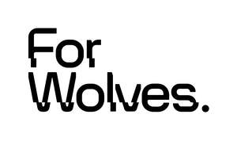

Trade Mark Journal No.2026/011 13 March 2026
UK00004347454 1 March 2026 (42)

- Class 42
- Website design; Website design and development; Website design consultancy; Website design services; Computer website design; Web site design; Design of websites; Web site design consultancy; Webpage design services; Homepage and webpage design; Web site design services; Web portal design; Web site design and creation services; Web page design services; Design and graphic arts design for the creation of web sites; Computer site design; Design of web sites; Design of web pages; Brochure design; Design and graphic arts design for the creation of web pages on the Internet; Design and construction of homepages and websites; Design and development of homepages and websites; Internet web site design services; Design and development of software for website development; Design of homepages and websites; Consultancy with regard to webpage design; Logo design services; Design, creation and programming of web pages; Providing information in the field of architectural design via a website; Providing information in the field of interior design via a web site; Design of home pages and web sites; Design and creation of homepages and web pages; Providing information in the field of interior design via a website; Consultancy relating to the creation and design of websites; Consultancy relating to the creation and design of websites for e-commerce; Graphic design; Database design; Product design; Graphic design services; Office layout design services; Design of software; Software design; Design and creation of web sites for others; Design of Internet pages; Design of artwork; Shop design; Graphic design for the compilation of web pages on the internet; Design of products; Design consultancy; Design and maintenance of web sites for others; Design services; Brand design services; Database design and development; Design of home pages; Design and creating web sites for others; Website development services; Consultancy relating to the design of homepages and Internet pages; Graphic design of promotional materials; Development, design and updating of home pages; Consultancy relating to the design of home pages and Internet sites; Product design services; Illustration services (design); Design consultation; Graphic illustration design services; Design of typefaces; Design and updating of home pages and web pages; Design and creation of homepages and Internet pages; Building design services; Product design and development; Programming of software for website development; Tool design; Design of stationery; Design, creation, hosting and maintenance of websites for others; Design of homepages and Internet pages; Custom design services; Analysis of product design; Design and development of databases; Architecture design services; Computer design; Design services for architecture; Software design and development; Website usability testing services; Construction design; New product design; Design of layouts for offices; Design services for art-work; Shop interior design; Interior design services; Engineering design; Technical design; Design of graphic software systems; Design services relating to artwork; Computer design services; Design and development of multimedia products; Planning, design, development and maintenance of online websites for third parties; Packaging design; Evaluation of product design; Architectural design; Computer specification design; Architectural design services; Dress design services; Jewelry design; Design of packaging; Design of engineering products; Design services relating to shop interiors; Graphic art design; Illustrating services (design); Design services (Packaging -); Graphic illustration design; Interior design; Design services for packaging; Packaging design services; Design of jewellery; Computer design research; Computer graphics design services; Design of information systems; Design planning; Visual design; Engineering design services; Design of computer database; Customized design of computer software; Website development for others; New products (Design of -); Design services for building interiors; Intranet design, development and maintenance; Design of tools; Consultancy relating to the design of packaging; Engineering design and consultancy; Rental of software for website development; Platforms for graphic design as software as a service [SaaS]; Design and development of engineering products; House design services; Design and development of new products; Jewellery design services; Hardware design; Smartphone software design; House design.
Red Subject Limited